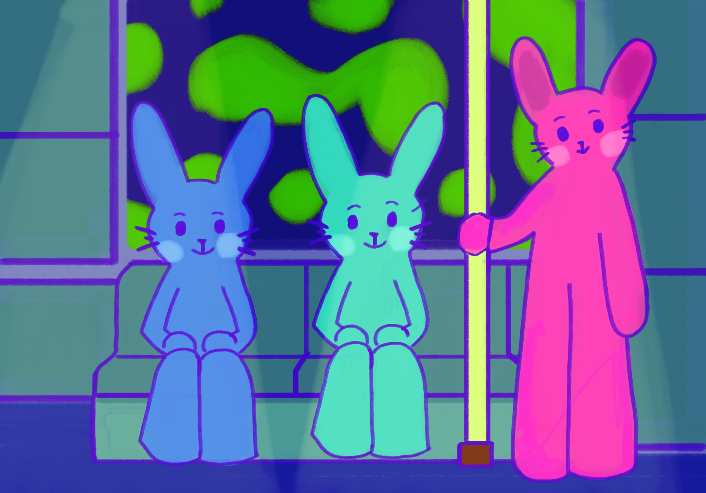
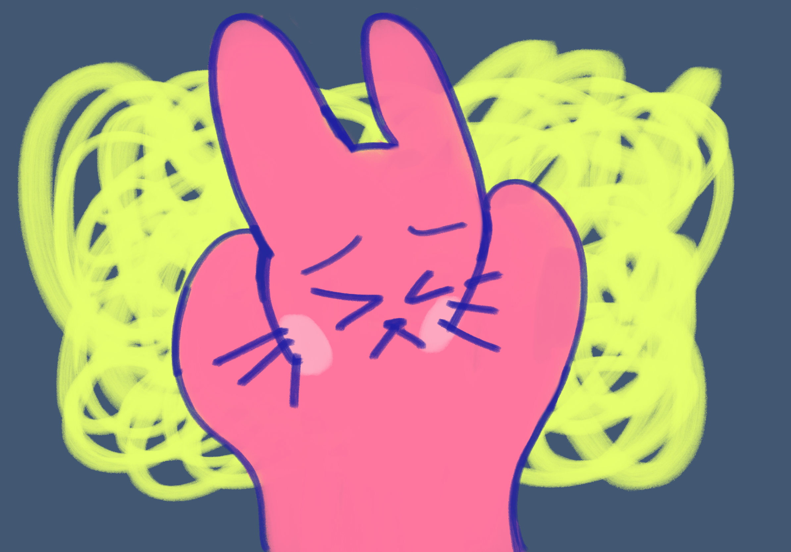
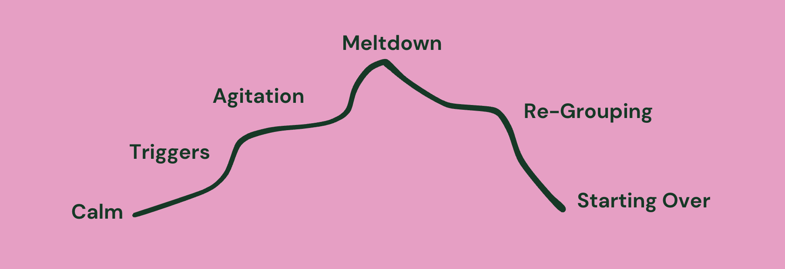

#2: Triggers
Identifiable stimuli (e.g. sudden changes in routine) begin to overwhelm individual.

In Singapore, a person with Autism Spectrum Disorder (ASD) is defined as a person who experiences difficulties with communication and social interaction, sensory stimulation, and displays repetitive behaviour. At present, there are no known definite causes of ASD.

We have different amounts of sensory inputs all the time. When a person with ASD gets triggered by sensory overload for example, nothing else is able to go in and hence they go into a meltdown in efforts to cut out all ongoing sensory input. A person with ASD experiencing meltdowns may change their behaviour verbally or physically.
Nope. Tantrums happen deliberately, when we know what we want to obtain but are not able to obtain it. Meltdowns, on the other hand, happen when a person with ASD becomes overwhelmed with an occurrence such as sensory overload, losing control of their behaviour and sense of reasoning.
Meltdowns are involuntary reactions to getting triggered by events such as being anxious, stressed or doing something out of the ordinary routine, etc. Meltdowns continue until the individual experiencing it becomes calm and feels safe.
A meltdown experienced by a person with ASD can be described as the following:

Identifiable stimuli (e.g. sudden changes in routine) begin to overwhelm individual.